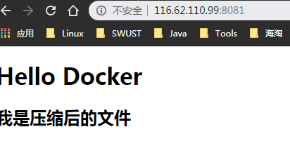
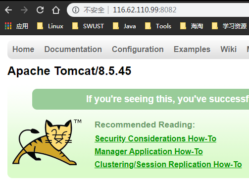

linux Docker命令
启动 systemctl start docker
守护进程重启 sudo systemctl daemon-reload
重启 docker 服务 systemctl restart docker
重启 docker 服务 sudo service docker restart
关闭 docker service docker stop
关闭 docker systemctl stop docker
Docker基本指令
从 Docker 镜像仓库获取镜像的命令是 docker pull
- docker pull
[选项] [Docker Registry 地址[:端口号]/]仓库名[:标签] - docker pull tomcat
列出镜像 - docker image ls || docker images
查看镜像、容器、数据卷所占用的空间 - docker system df
虚悬镜像 - docker image prune
中间层镜像 - docker image ls -a
列出部分镜像 - docker image ls ubuntu
- docker image ls ubuntu:16.04
docker image ls 还支持强大的过滤器参数 --filter
希望看到在 mongo:3.2 之后建立的镜像 - docker image ls -f since=mongo:3.2
想查看某个位置之前的镜像也可以，只需要把 since 换成 before 即可。
此外，如果镜像构建时，定义了 LABEL，还可以通过 LABEL 来过滤。
容器操作
列出正在运行的容器
- docker ps
列出所有容器 - docker ps -a
列出所有容器的ID - docker ps -a -q
删除所有容器 - docker rm $(docker ps -a -q)
1 | [root@MyCentOS]/usr/local/docker/tomcat# docker rm $(docker ps -a -q) |
从新启动容器
- docker restart
或者
自定义容器名称启动时 - docker run -p 8081:8080 --name mytomcat tomcat
停用容器 - docker stop <容器id>
守护态运行
更多的时候，需要让 Docker 在后台运行而不是直接把执行命令的结果输出在当前宿主机下。此时，可以通过添加 -d 参数来实现。避免每次都需要开一个线程进去操作容器
sudo docker run -p 8082:8080 --name mytomcat2 -d tomcat
1 | sudo docker ps |
结果查看:
- 8081
 - 8082

进程
主线程
工作线程
以特定格式显示
利用 docker image ls 把所有的虚悬镜像的 ID 列出来，然后才可以交给 docker image rm 命令作为参数来删除指定的这些镜像，这个时候就用到了 -q 参数。
- docker image ls -q
下面的命令会直接列出镜像结果，并且只包含镜像 ID 和仓库名：打算以表格等距显示，并且有标题行，和默认一样，不过自己定义列：
删除本地镜像
删除本地的镜像
- docker image rm
[选项] <镜像1> [<镜像2> ...]
1 | $ docker image ls |
1 | $ docker image rm 501 |
$ docker image rm centos
Untagged: centos:latest
Untagged: centos@sha256:b2f9d1c0ff5f87a4743104d099a3d561002ac500db1b9bfa02a783a46e0d366c
Deleted: sha256:0584b3d2cf6d235ee310cf14b54667d889887b838d3f3d3033acd70fc3c48b8a
Deleted: sha256:97ca462ad9eeae25941546209454496e1d66749d53dfa2ee32bf1faabd239d38
1 | 使用 镜像摘要 删除镜像 |
$ docker image ls --digests
REPOSITORY TAG DIGEST IMAGE ID CREATED SIZE
node slim sha256:b4f0e0bdeb578043c1ea6862f0d40cc4afe32a4a582f3be235a3b164422be228 6e0c4c8e3913 3 weeks ago 214 MB
$ docker image rm node@sha256:b4f0e0bdeb578043c1ea6862f0d40cc4afe32a4a582f3be235a3b164422be228
Untagged: node@sha256:b4f0e0bdeb578043c1ea6862f0d40cc4afe32a4a582f3be235a3b164422be228
1 |
|
$ docker image rm $(docker image ls -q redis)
1 | 或者删除所有在 mongo:3.2 之前的镜像： |
$ docker image rm $(docker image ls -q -f before=mongo:3.2)
## CentOS/RHEL 的用户需要注意的事项
在 Ubuntu/Debian 上有 UnionFS 可以使用，如 aufs 或者 overlay2，而 CentOS 和 RHEL 的内核中没有相关驱动。因此对于这类系统，一般使用 devicemapper 驱动利用 LVM 的一些机制来模拟分层存储。这样的做法除了性能比较差外，稳定性一般也不好，而且配置相对复杂。Docker 安装在 CentOS/RHEL 上后，会默认选择 devicemapper，但是为了简化配置，其 devicemapper 是跑在一个稀疏文件模拟的块设备上，也被称为 loop-lvm。这样的选择是因为不需要额外配置就可以运行 Docker，这是自动配置唯一能做到的事情。但是 loop-lvm 的做法非常不好，其稳定性、性能更差，无论是日志还是 docker info 中都会看到警告信息。官方文档有明确的文章讲解了如何配置块设备给 devicemapper 驱动做存储层的做法，这类做法也被称为配置 direct-lvm。
除了前面说到的问题外，devicemapper + loop-lvm 还有一个缺陷，因为它是稀疏文件，所以它会不断增长。用户在使用过程中会注意到 /var/lib/docker/devicemapper/devicemapper/data 不断增长，而且无法控制。很多人会希望删除镜像或者可以解决这个问题，结果发现效果并不明显。原因就是这个稀疏文件的空间释放后基本不进行垃圾回收的问题。因此往往会出现即使删除了文件内容，空间却无法回收，随着使用这个稀疏文件一直在不断增长。
所以对于 CentOS/RHEL 的用户来说，在没有办法使用 UnionFS 的情况下，一定要配置 direct-lvm 给 devicemapper，无论是为了性能、稳定性还是空间利用率。
或许有人注意到了 CentOS 7 中存在被 backports 回来的 overlay 驱动，不过 CentOS 里的这个驱动达不到生产环境使用的稳定程度，所以不推荐使用。